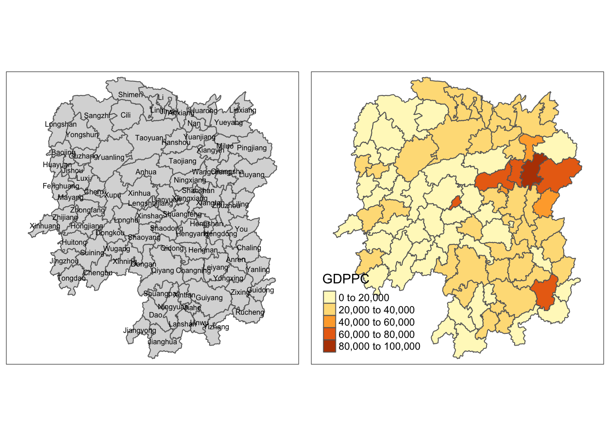

pacman::p_load(sf, spdep, tidyverse, knitr, tmap)Hands-on Exercise 6: Spatial Weights and Application
1 The Set Up
1.1 Packages used in this section
Load packages into R
1.2 Import Data to be used
1.2.1 Import shapefile
hunan <- st_read(dsn = "data/geospatial/",
layer= "Hunan")Reading layer `Hunan' from data source
`/Users/junhaoteo/Documents/junhao2309/IS415/Hands-on_Ex/Hands-on_Ex06/data/geospatial'
using driver `ESRI Shapefile'
Simple feature collection with 88 features and 7 fields
Geometry type: POLYGON
Dimension: XY
Bounding box: xmin: 108.7831 ymin: 24.6342 xmax: 114.2544 ymax: 30.12812
Geodetic CRS: WGS 841.2.2 Import csv file
hunan2012 <- read_csv("data/aspatial/Hunan_2012.csv")1.2.3 Performing relational join
The code chunk below joins hunan and hunan2012 via the left_join() of dplyr package. They are automatically joined by “County”.
hunan <- left_join(hunan, hunan2012) %>%
select(1:4, 7, 15)1.3 Visualising Regional Development Indicator
basemap <- tm_shape(hunan) +
tm_polygons() +
tm_text("NAME_3", size = 0.5)
gdppc <- qtm(hunan, "GDPPC")
tmap_arrange(basemap, gdppc, asp = 1, ncol = 2)
2 Computing Contiguity Spatial Weights
poly2nb() of spdep pacakage builds a neighbours list based on regions with contiguous boundaries. Contiguous meaning that they are connected together and not separated by for example the sea. Example of non-contiguous: Islands
2.1 Computing (QUEEN) contiguity based neighbours
The code chunk below is used to compute Queen contiguity weight matrix.
wm_q <- poly2nb(hunan, queen = TRUE)
summary(wm_q)Neighbour list object:
Number of regions: 88
Number of nonzero links: 448
Percentage nonzero weights: 5.785124
Average number of links: 5.090909
Link number distribution:
1 2 3 4 5 6 7 8 9 11
2 2 12 16 24 14 11 4 2 1
2 least connected regions:
30 65 with 1 link
1 most connected region:
85 with 11 linksThe summary report above shows that there are 88 area units, with area unit no. 85 is connected to 11 other area unit.
For each polygon in our polygon object, wm_q lists all neighboring polygons and its corresponding links.
wm_q[[1]][1] 2 3 4 57 85Polygon 1 has 5 neighbors and the numbers represent the polygon IDs.
hunan$County[1][1] "Anxiang"Output reveals that Polygon ID=1 is Anxiang
To reveal the county names of the five neighboring polyons, the code chunk below does that.
hunan$NAME_3[c(2,3,4,57,85)][1] "Hanshou" "Jinshi" "Li" "Nan" "Taoyuan"nb1 <- wm_q[[1]]
nb1 <- hunan$GDPPC[nb1]
nb1[1] 20981 34592 24473 21311 22879